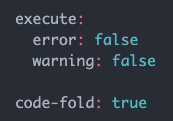
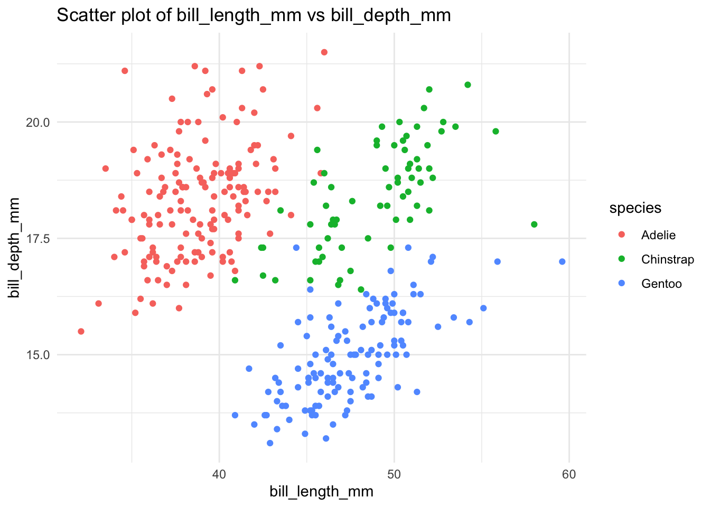
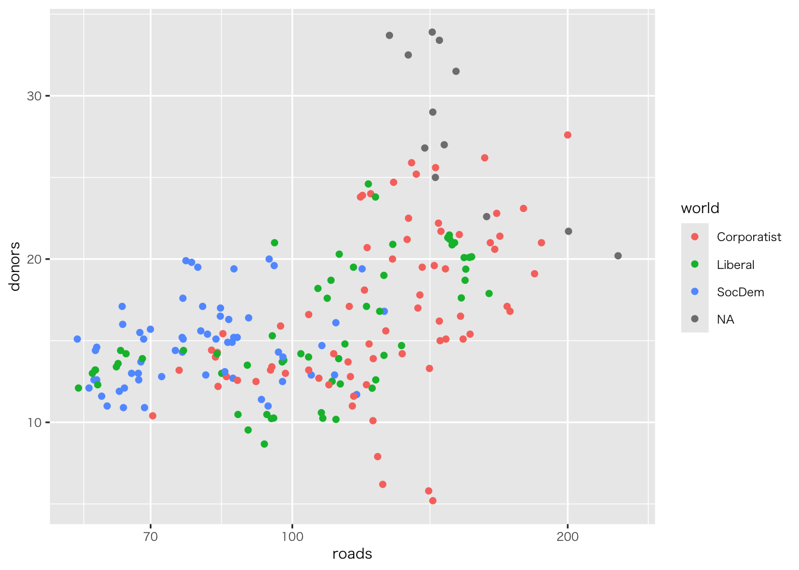
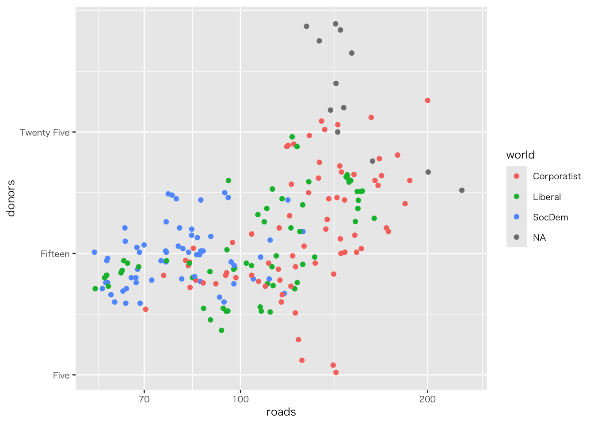
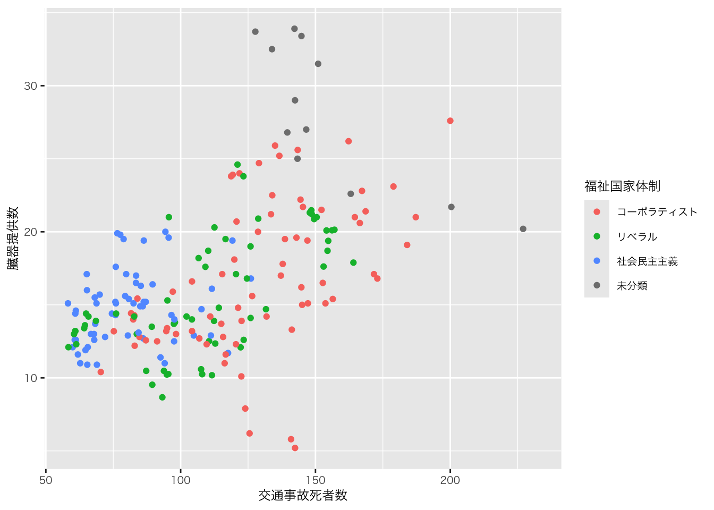

![]()
penguins |>
group_by(species) |>
summarise(
個数 = n()
) |>
ggplot(aes(x = species, y = 個数)) +
geom_col() +
geom_text(aes(label = 個数), vjust = -0.5,
size = 4) # labelでラベルを指示（オブジェクトを指定）。vjust でラベルの位置を調整Ⅰ. 前回の振り返り
1. 前回の「授業の感想」
- 別紙参照
Ⅱ. レポート課題（最終提出物）
1. 提出物
- レポート（最終成果物）の出力ファイル
- html / revealjs / docx / pptx のいずれか
- 第8週のプレゼンテーションも上記のファイルにもとづいて行ってもらいます
html / revealjs / docx / pptxの見た目の変更（cssやテンプレート）については、以下を参照
- quartoファイル
- qmd
- データファイル（すべて）
- csv / xlsx / xls
2. 提出先と締め切り
note | 提出先と締め切り
- 回答先：Google Forms
- 締め切り：2025年6月4日（水）10時30分まで
- 出力形式:
- レポート（最終成果物）の出力ファイル
- レポート（最終成果物）のquartoファイル
- レポート（最終成果物）で用いたデータファイル（すべて）
アップロードするすべてのファイル名のどこかに氏名を入れて下さい
再提出する場合は6月6日（金）23:59分までに提出して下さい（必須ではありません）。最終版のファイルで成績を評価します
3. 出力ファイルの設定
- 出力ファイル（html / revealjs / docx / pptx）は次のように設定して下さい（設定方法は以下を参照）
- エラーメッセージと警告メッセージは非表示にすること
- コードは折り畳むこと
4. 内容
- タイトルと見出し
- 分析の対象と分析の目的
- 図（最低3つ）とそれぞれの簡単な（1行程度）説明
- 結論（作図を通して何が明らかになったのか）
- 出典
- データの出典
- この他にしたものもあれば､それも記載すること
- ただし､Rやggplotの使い方､作成に関する出典は記載しない
レポート（最終成果物）のサンプル
-
金沢広域急病センター利用者数
- データ入手先：URL
-
野生鳥獣の放射線モニタリング調査結果
- データ入手先：URL
5. 評価基準（ルーブリック）
学修目標（到達目標）（再掲）
- 受講生が、R言語の基本的な操作（データの読み込み、加工、抽出、結合など）ができる
- 受講生が、ggplot2パッケージを使い、基本的な図（棒グラフ；ヒストグラム；箱ひげ図；散布図；折れ線グラフ）を作成できる
- 受講生が、自分の関心のあるテーマにかかわるデータから適切な図を作成できる
Ⅲ. プレゼンテーションの内容
- Ⅱ-1（レポート（最終成果物）の出力ファイル）にもとづき､一人5分程度で口頭発表
Ⅳ. チャンクオプション
1. チャンクごとに設定
- チャンクを実行しない
- 一部のチャンクだけ動かないなどの理由で､レンダリングやすべてのチャンクの実行から除外したい場合に有効

#| fig-cap: タイトル
#| fig-asp: 図の比率
#| code-fold: する／しないの設定- 図にタイトルを付ける
- 図の比率を変える
- コードを折り畳む（「コードを折り畳む」は､この授業ではファイル全体で設定することにします（以下参照））
- 以下のように使います

2. ファイル全体に設定
YAMLに以下を追加すると､すべてのチャンクでエラーと警告を非表示､コードは折り畳んで表示される（挿入場所はどこでもよい）
- execute: ブロックとは？
- Quartoにおけるコード実行の動作（再実行、警告の表示、エラーハンドリングなど）を細かく制御するセクション
- error: false
- エラーが発生したらドキュメントの出力を中断します（デフォルトの動作）。
- warning: false
- 読者向けのレポートや、警告が多くて煩雑な出力を抑えたいときに使用 code-fold: true
- コードを折り畳んで、出力します
最終成果物は「読者向けのレポート」に当たります。warningはfalseにしておきましょう。一方で、コードについては、私がコードと図の対応関係について確認して成績をつけたいので、code-foldはtrueにして下さい。一般的にはコード自体、非表示でよいです（echo: falseで非表示）
execute:
error: false
warning: false
code-fold: true
スペースに注意しましょう（必ず半角スペースで空きスペースを作ること）
Ⅴ. CSSと出力テンプレート
0. 事前準備
-
Google Drive「w7」から以下のファイルをダウンロード
- CSSファイル（「style.css」）
- テンプレートファイル（「template.pptx」）
1. html
- Quartoファイルと同一階層に､CSSファイルを置く
- YAMLに以下のコードを追加（場所は任意）
css: style.csshtmlカラーコードで色を変えられる。カラーコードは色の名前とカラーコードが一目でわかるWEB色見本を参照
2. Power Point
- Quartoファイルと同一階層に､テンプレートファイルを置く
- YAMLに､html出力をコメントアウトしたうえで､以下を追加
format:
pptx:
toc: true
reference-doc: template.pptx- pptxで可能な設定については公式サイトを参照
⑴ テンプレートファイルの作成
このサイト（RStudioとRMarkdownで作るPowerPointプレゼンテーション）が参考になります
テンプレートに指定するファイルは、次の4つのレイアウトを最初の4つのレイアウトとして含む必要があります。
- タイトルスライド（Title Slide）
- セクション見出し（Section Header）
- タイトルとコンテンツ（Title and Content）
- 2つのコンテンツ（Two Content）
最近のバージョンのPowerPointに含まれているテンプレート、あるいはそれを編集したテンプレートであれば、おそらく問題なく使えるでしょう。
⑵ PowerPointに含まれているテンプレート
- ファイル > テンプレートから新規作成
- 変更せず（変更してもよい）に保存
- ファイル名を「template.pptx」とする
- Quartoファイルと同一階層に､テンプレートファイルを置く
3. revealjs
revealjsのテーマを変更するには､YAMLにthemeを追加する
title: "Presentation"
format:
revealjs:
theme: dark- CSSで文字色などの変更も可能
- この他､可能なテーマ､設定については公式サイトを参照
- Google Drive「w6」の「w6_revealjs_kariyacss」ファイル一式も参考
Ⅵ. テキストラベル
Ⅶ. 自作関数：同一処理を簡単にする方法
レポートで作成する図は、x軸の変数（カラム名）とy軸の変数（カラム名）を組み換えていることが多いです。例えば、ある図は国語、もう一つの図は算数、また別の図は英語のような複数の図を作成することを思い浮かべて下さい
自作関数を使うと、コードを単純化でき、作業の効率化、ミス防止につながります
教科書A2.3（337ページから）
このやり方でコードをコピーし､流用するのは避けて下さい。代わりに関数を書きましょう。類似の処理を行うコードは関数を書くためのよい機会です（ヒーリー，キーラン (2021), 337）
1. 関数の定義
- 自作関数：データと二つのカラム（xとy）を空白（実際にはdata, x/y_column）にして､関数を定義
- 自作関数を使ったプロット
2. 関数の定義例：penguins
⑴ 自作関数
function_penguin_plot <- function(data, x_column, y_column) {
ggplot(penguins, aes_string(x = x_column, y = y_column, color = "species")) +
geom_point() +
labs(title = paste("Scatter plot of", x_column, "vs", y_column),
x = x_column,
y = y_column) +
theme_minimal()
}⑵ 先の自作関数を使ったコード例とそのプロット
- 二つの作図のコードが簡略化されている
penguins |>
function_penguin_plot("bill_length_mm", "bill_depth_mm") |>
print()
penguins |>
function_penguin_plot("flipper_length_mm", "body_mass_g") |>
print()
特に図の見た目を変更したいときに､元のコード（自作関数）だけを修正すれば済みます
以下のコードは､便宜上､function名を新しくしていますが（function_penguin_plot_2）､通常､使う場合は､function_penguin_plotのままでかまいません（同じfunction名だと､最初のコードと改良したコードの変化がわからなくなるためです）
- 以下のコードでは､軸のラベルとドットの色を修正している
function_penguin_plot_2 <- function(data, x_column, y_column) {
ggplot(penguins, aes_string(x = x_column, y = y_column, color = "species")) +
geom_point() +
labs(title = paste("Scatter plot of", x_column, "vs", y_column),
x = "ペンギンのヒレの長さ(mm)",
y = "ペンギンの体重(g)") +
scale_color_brewer(palette = "Set2") +
theme_minimal(base_family = "HiraKakuProN-W3")
}penguins |>
function_penguin_plot_2("bill_length_mm", "bill_depth_mm") |>
print()
penguins |>
function_penguin_plot_2("flipper_length_mm", "body_mass_g") |>
print()
Ⅷ. インタラクティブな図を作る
ggplotを使って簡単にインタラクティブな図に変換できます
パッケージのインストールと読み込み
install.packages("plotly")
library("plotly")- 図のコードをggplotly()で囲むだけ！
ggplotly(
penguins |>
ggplot(aes(x = species, fill = island)) +
geom_bar(position = "dodge") +
labs(title = "島ごとのペンギンの種類の分布",
x = "ペンギンの種類",
y = "個体数") +
theme(
axis.text.x = element_text(angle = 45, hjust = 1) # x軸の値のラベルの傾きを調整（angleやhjustで微調整可能）
)
)ggplotly() は stat_cor()の出力を正しく処理できない場合があるため、散布図には向かないかもしれません
Ⅸ. Callout Blocks
- 読み手の注意喚起のための文字領域
- quartoファイルのRチャンク以外の領域に以下のように入力すると、
:::{.callout-note}
## Note | テスト
テスト
:::
以下のように出力される
Note | テスト
テスト
- 5種類用意されている。詳しくはリンクを参照
Callout Blocksは、pptxまたはdocxの出力形式には対応していません
Ⅹ. 宿題
1. 授業の感想
note | 回答先と締め切り
- 回答先：Google Forms
- 締め切り：2025年5月30日（金）23時59分まで
2. レポート（最終成果物）
note | 提出先と締め切り
- 回答先：Google Forms
- 締め切り：2025年6月4日（水）10時30分まで
- 出力形式:
- レポート（最終成果物）の出力ファイル
- レポート（最終成果物）のquartoファイル
- レポート（最終成果物）で用いたデータファイル（すべて）
アップロードするすべてのファイル名のどこかに氏名を入れて下さい
再提出する場合は6月6日（金）23:59分までに提出して下さい（必須ではありません）。最終版のファイルで成績を評価します
References
ヒーリー，キーラン (2021) 『データ分析のためのデータ可視化入門』, 講談社.
Copyright
苅谷千尋